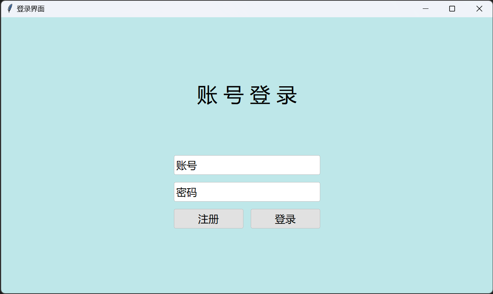
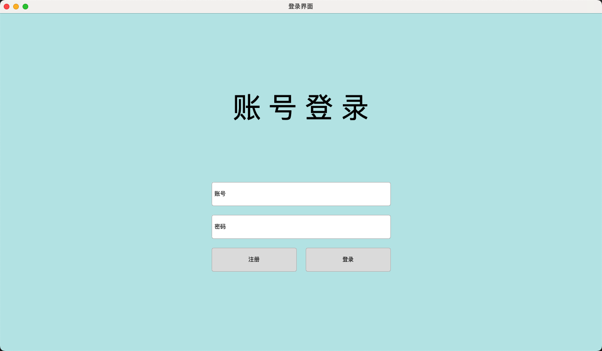
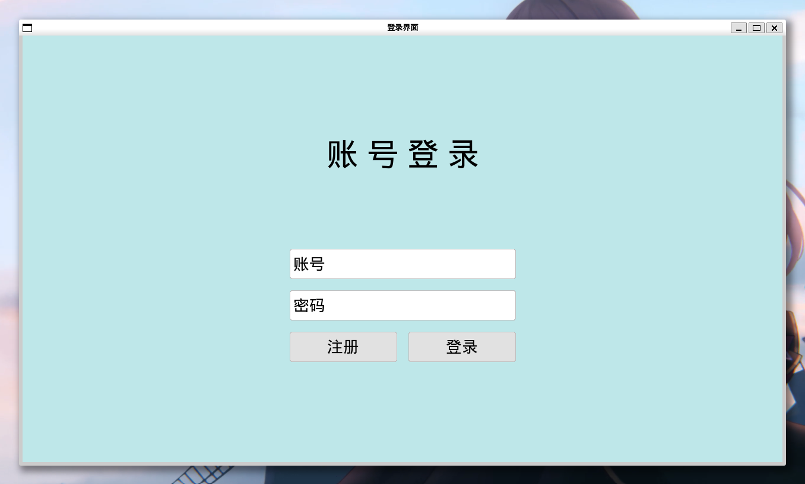

§1.3 tkintertools 初体验¶
提示
若你没有任何前置知识，可以跳过可选部分，只需你跟着后面的教程一步一步来，体验一下利用 tkintertools 开发图形化程序即可。
对于了解 tkinter 的人，可以看一下可选部分，能够加深对 tkintertools 框架的理解。
一、基本框架（可选）¶
1.1 tkinter 界面程序的开发框架¶
对 tkinter 开发了解的开发人员会知道，tkinter 的开发框架一般是下面这样的：
- 引入模块；
- 创建根窗口；
- 建立界面和程序逻辑；
- 根窗口进入消息事件循环；
其中 1、2 和 4 是必须的，其所有的控件都以最顶级的容器控件 —— 根窗口，为基础。
也就是说，所有的控件都必须以它为父控件。
下面是一段示例：
1.2 tkintertools 的开发框架¶
若你十分熟悉 tkinter 的开发框架，那么你将极速掌握 tkintertools 的开发框架：
- 引入模块；
- 创建根窗口；
- 创建根画布控件；
- 建立界面和程序逻辑；
- 根窗口进入消息事件循环；
在 tkintertools 里，应该时刻将根画布控件视作最顶层的容器控件。
但这里有一点不同的是，根画布控件不只一个，我们可以将其每一个都视为一个页面，为其单独设计 UI。
其他的部分都和 tkinter 的开发思想基本完全一致的。
下面是一段简单的示例：
import tkintertools as tkt # 引入模块
root = tkt.Tk('tkintertools', 1280, 720) # 创建根窗口
canvas_1 = tkt.Canvas(root, 1280, 720, 0, 0)
# 在这里建立界面和程序逻辑
canvas_2 = tkt.Canvas(root, 1280, 720, 1280, 0)
# 在这里建立界面和程序逻辑
root.mainloop() # 根窗口进入消息事件循环
画布可以有很多个，我们后续会了解到如何在画布之间进行切换。
简单来说，tkintertools 的大部分控件都是在 Canvas 上重绘得到的。
二、用“搭积木”的方式去编写界面¶
使用 tkintertools 模块进行界面开发和搭积木比较像，我们不用管这个控件具体什么样，我们只需要知道它的大小，和所属的页面（画布），然后将其放置到我们预期的位置就可以了。若是摆放空间有重叠部分，那么先被“放置”上去的控件会在下面，这和“搭积木”十分类似。
下面我们用这种思想，利用 tkintertools 模块手把手地教大家“搭建”一个用户登录的界面！
下面是教程的运行环境：
- 操作系统：Windows11 23H2
- Python 环境：Python3.12.0
2.1 第一步：创建一个基本的窗口¶
下面是我们这一步的预期设计：
- 窗口大小: 1280 × 720（单位：像素）
- 窗口位置: 不刻意设定，由系统自动管理，当然也可以指定，只是这里我们不做过多要求
- 窗口标题: 登录界面
- 窗口图标:
tkinter的默认值，我们对此暂不做要求
我们的代码如下:
import tkintertools as tkt # 引入 tkintertools
# 第一部分
TITLE = '登录界面' # 窗口标题
WIDTH = 1280 # 窗口宽度
HEIGHT = 720 # 窗口高度
root = tkt.Tk(TITLE, WIDTH, HEIGHT) # 创建窗口
# “积木”就在此处搭建
root.mainloop() # 窗口进入消息事件循环
点击查看实现效果

2.2 第二步：添加承载 tkintertools 控件的容器控件¶
根据 tkintertools 的底层机制，tkintertools 中几乎所有控件都要放在 Canvas 中，于是我们就往窗口“放入”一个 Canvas 控件。Canvas 译为画布。
下面是我们这一步的预期设计：
- 画布大小: 1280 × 720（铺满整个窗口）
- 画布位置: (0, 0)，以画布左上角为基准
- 画布背景色: BEE7E9（RGB）
完整代码如下：
import tkintertools as tkt # 引入 tkintertools
# 第一部分
TITLE = '登录界面' # 窗口标题
WIDTH = 1280 # 窗口宽度
HEIGHT = 720 # 窗口高度
root = tkt.Tk(TITLE, WIDTH, HEIGHT) # 创建窗口
# 第二部分
X = 0 # 画布左上角横坐标
Y = 0 # 画布左上角纵坐标
BACKGROUND = '#BEE7E9' # 画布背景颜色
canvas = tkt.Canvas(root, WIDTH, HEIGHT, X, Y, background=BACKGROUND) # 创建画布
root.mainloop() # 窗口进入消息事件循环
点击查看实现效果

2.3 第三步：添加各种 UI¶
我们在中间添加一个用户名输入框和密码输入框，下面横排并列添加注册和登录按钮，这样一个像模像样的界面就搭建好了！
我们在这一步的预期设计如下：
- 要有一个大标题
- 按顺序有账号和密码输入框以及注册和登录按钮
- 密码输入框字符被替代为圆点
- 整体布局居中
代码如下：
import tkintertools as tkt # 引入 tkintertools
# 第一部分
TITLE = '登录界面' # 窗口标题
WIDTH = 1280 # 窗口宽度
HEIGHT = 720 # 窗口高度
root = tkt.Tk(TITLE, WIDTH, HEIGHT) # 创建窗口
# 第二部分
X = 0 # 画布左上角横坐标
Y = 0 # 画布左上角纵坐标
BACKGROUND = '#BEE7E9' # 画布背景颜色
canvas = tkt.Canvas(root, WIDTH, HEIGHT, X, Y, background=BACKGROUND) # 创建画布
# 第三部分
canvas.create_text(640, 200, text='账 号 登 录', font=(tkt.FONT, 32)) # 文本显示
tkt.Entry(canvas, 450, 360, 380, 50, text=('账号', '点击输入账号')) # 账号输入框
tkt.Entry(canvas, 450, 430, 380, 50, text=('密码', '点击输入密码'), show='●') # 密码输入框
tkt.Button(canvas, 450, 500, 180, 50, text='注册') # 注册按钮
tkt.Button(canvas, 650, 500, 180, 50, text='登录') # 登录按钮
root.mainloop() # 窗口进入消息事件循环
点击查看实现效果

怎么样？是不是非常简单，就如同搭积木一般呢？看到这里说明你已经掌握如何使用 tkintertools 来编写一个简单的界面程序了！
2.4 在其他操作系统上的效果¶
也许你会担心在不同操作系统上的效果不太一样的问题，但这其实是没必要的，因为 tkintertools 底层是直接调用 Canvas 进行绘制的，不管在哪个平台上的效果都几乎一样。下面是各个操作系统中上述代码运行的效果：
-
Windows 10:
点击查看实现效果

Windows 10 平台上做了特殊的处理，为了匹配 Windows 10 其他控件的效果，控件的圆角大小默认值被设置为了 0 ，而在其他系统上面，控件会默认带有一定大小的圆角，不用担心这种设定会造成什么影响，这只是默认值而已，你可以通过参数来调整。
-
macOS 14:
暂时没有内容，近期会更新。
-
Ubuntu 22.04（WSL）:
点击查看实现效果

为了方便，Ubuntu 的效果直接用 Windows 的 WSL 来实现了。
-
Deepin 20.9:
点击查看实现效果

这个是真实的深度操作系统演示效果，而非虚拟机或者 WSL。（呃，这个字体可能有点 bug，tkinter 在 Deepin 上表现貌似不太好。
绝对不是我的问题。）